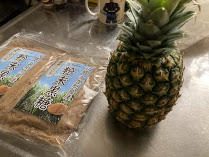

テパチェを作ってみる
材料の調達
２月２６日
スーパーでパイナップルを売っていた（機能性表示食品だった）ので買ってきました。
ピロンシージョは、ネットでも見つけられなかったので、沖縄の黒糖を使うことにしました。
シナモンは、埼玉の家に以前大量に買ったものがあるので、週末戻ったときに持ってくることにしました。
クローブは、焼きりんご用に買ってあったものが少し残っているのでそれを使うことにしました。
